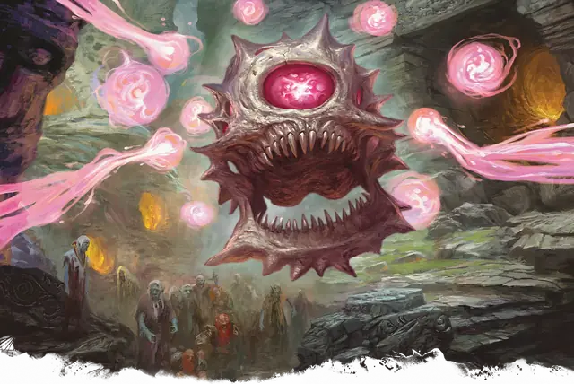

Тиран смерти
Death Tyrant
Большая Нежить (Бехолдер), Принципиальная Злая

Класс Защиты 19 Инициатива +12 (22)
Хиты 195 (26к10 + 52)
Скорость 5 футов, Полёта 40 футов (парит)
| мод | спас | ||
|---|---|---|---|
| СИЛ | 18 | +4 | +4 |
| ЛОВ | 14 | +2 | +2 |
| ТЕЛ | 14 | +2 | +7 |
| мод | спас | ||
|---|---|---|---|
| ИНТ | 19 | +4 | +4 |
| МДР | 15 | +2 | +7 |
| ХАР | 19 | +4 | +4 |
Иммунитеты Яд; Истощение, Окаменевший, Опрокинутый, Отравленный, Очарованный, Парализованный
Чувства Тёмное зрение 120 футов, пассивное Восприятие 22
Языки Глубинная речь, Подземный
Опасность 14 (11 500 опыта или 13 000 опыта в Логове; БВ +5)
Особенности
Легендарное сопротивление (3/день, или 4/день в Логове). Если тиран смерти проваливает спасбросок, он вместо этого может в нём преуспеть.
Действия
Мультиатака. Тиран смерти использует Лучи из глаз трижды.
Укус. Бросок рукопашной атаки: +9, досягаемость 5 фт. Попадание: 13 (2к8 + 4) Колющего урона.
Лучи из глаз. Тиран смерти пускает из глаз выбранный случайным образом из описанных ниже магический луч в цель, которую он видит в пределах 120 футов от себя (бросьте 1к10; повторите бросок, если тиран смерти уже использовал этот луч в этом ходу):
1. Луч очарования. Спасбросок Мудрости: Сл 17. Провал: 13 (3к8) Психического урона, и цель Очарована на один час или пока она не получит урон. Успех: Только половина урона.
2. Луч паралича. Спасбросок Телосложения: Сл 17. Провал: Цель Парализована и повторяет спасбросок в конце каждого своего хода, оканчивая этот эффект при успехе. Спустя 1 минуту она автоматически преуспевает в спасброске.
3. Луч ужаса. Спасбросок Мудрости: Сл 17. Провал: 10 (3к6) Психического урона, и цель Испугана до конца своего следующего хода. Успех: Только половина урона.
4. Луч замедления. Спасбросок Телосложения: Сл 17. Провал: 18 (4к8) Некротического урона. До конца следующего хода цели её Скорость уменьшается вдвое, а также она не может совершать Реакции и может в свой ход использовать либо действие, либо Бонусное действие, но не то и другое одновременно.
5. Луч бессилия. Спасбросок Телосложения: Сл 17. Провал: 16 (3к10) урона Ядом, и цель Отравлена до конца своего следующего хода. Пока цель Отравлена, она не может восстанавливать Хиты. Успех: Только половина урона.
6. Луч телекинеза. Спасбросок Силы: Сл 17 (если цель — существо Громадного размера, она автоматически преуспевает в спасброске). Провал: Тиран смерти перемещает цель на расстояние до 30 футов в любом направлении. Цель Опутана до начала следующего хода тирана смерти или пока он не окажется Недееспособен. При помощи этого луча тиран смерти может аккуратно взаимодействовать с объектами, например манипулировать простым инструментом и открывать двери или контейнеры.
7. Луч сна. Спасбросок Мудрости: Сл 17 (если цель — Конструкт или Нежить, она автоматически преуспевает в спасброске). Провал: Цель Бессознательна на 1 минуту. Состояние прекращается, если цель получит урон или существо в пределах 5 футов от цели действием разбудит её.
8. Луч окаменения. Спасбросок Телосложения: Сл 17. Провал: Цель Опутана и повторяет спасбросок в конце своего следующего хода, если всё ещё Опутана. При успехе эффект для неё прекращается Второй провал: Цель становится Окаменевшей вместо Опутанной.
9. Луч дезинтеграции. Спасбросок Ловкости: Сл 17. Провал: 36 (8к8) Силового урона. Если цель — немагический объект или творение магической силы, этот луч дезинтегрирует её часть объёмом с 10-футовый Куб. Успех: Только половина урона. Провал или успех: Если цель — существо и этот луч уменьшает её Хиты до 0, она рассыпается в пыль.
10. Луч смерти. Спасбросок Ловкости: Сл 17. Провал: 55 (10к10) Некротического урона. Успех: Только половина урона. Провал или успех: Цель умирает, если луч уменьшает её Хиты до 0.
Бонусные действия
Конус негативной энергии. Центральный глаз тирана смерти испускает невидимую магическую волну негативной энергии 150-футовым Конусом. До начала следующего хода тирана смерти существа в этой области не могут восстанавливать Хиты. Любой нетронутый труп Гуманоида в этой области восстаёт в виде Зомби под управлением тирана смерти; этот зомби имеет то же значение Инициативы, что тиран смерти, и действует сразу после него.
Легендарные действия
У этого существа есть 3 использования Легендарных действий (или 4 использования в его Логове); оно может немедленно после окончания хода другого существа потратить одно использование, чтобы совершить одно из следующих действий. Существо восполняет все потраченные использования в начале каждого своего хода.
Чавк-чавк. Тиран смерти совершает две атаки Укусом.
Взор. Тиран смерти использует Лучи из глаз.
Бонус мастерства +5
Среда обитания Подземье
Сокровища Любые
Тиран смерти
Несмертные бехолдеры
Тиран смерти — это бехолдер, что и за гранью смерти не оставляет своих странных чужеродных целей. Десять сгустков энергии — всё, что осталось от его волшебных глаз, — вращаются вокруг парящего одноглазого черепа, а ненавистный взор его глазницы гасит жизнь и поднимает мёртвых из могил.
Как правило, бехолдеры обращаются в тиранов смерти на протяжении долгих лет, если их сновидения полнятся мыслями о смерти, о противоестественном вознесении или о странствиях во враждебные жизни пределы. Некоторые тираны смерти восстают из трупов убитых бехолдеров либо возникают под воздействием неведомой магии или излучения Подземья. Порой бехолдеры и сами целенаправленно ищут этой неупокоенной участи — подобно тому как порочные маги стремятся стать личами, — однако случается это редко, ибо большинство бехолдеров и без того считают себя совершенными.
Каким бы образом ни возник тиран смерти, его нежизнью движут странные, болезненные побуждения. Его мотивация, как правило, не сдерживается никакими ограничениями и лежит за гранью понимания смертных.
Логова тиранов смерти
Тираны смерти часто таятся глубоко в Подземье — в лабиринтах туннелей, что занимали при жизни, либо в логовах поверженных ими врагов-бехолдеров. Эти логова безжизненны, поскольку тираны смерти обращают своих слуг в кошмарную Нежить.
Местность, в которой находится логово тирана смерти, изменяется из-за его присутствия, что создаёт следующие эффекты:
• Насыщение негативной энергией. Каждый раз, когда существо в пределах 1 мили от логова восстанавливает Хиты заклинанием, оно вычитает 1к10 из количества восстановленных Хитов.
• Скопофобия. Существа в пределах 1 мили от логова ощущают, будто за ними наблюдают. Каждый раз, когда существо, кроме самого тирана смерти и его союзников, завершает Короткий отдых в этой области, оно должно преуспеть в спасброске Мудрости Сл 15; при провале оно не получает преимуществ этого отдыха.
Если тиран смерти умирает или перемещает своё логово в другое место, все эти эффекты мгновенно исчезают.